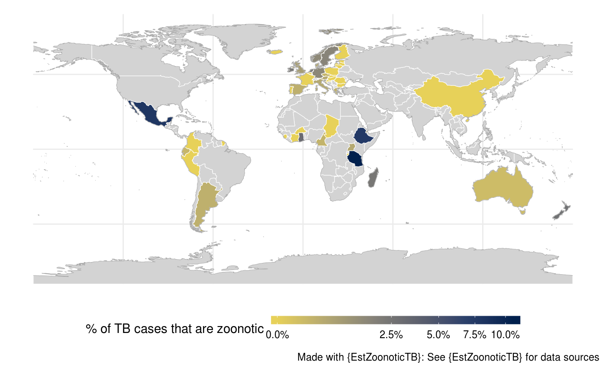

This general purpose function can be used to generate a global map for a single variable. It has few defaults but
the data supplied must contain a country_code variable (that uses the iso3 standard) for linking to mapping data.
global_map(data = NULL, variable = NULL, variable_label = NULL, trans = "identity", fill_labels = NULL, viridis_palette = "cividis", show_caption = TRUE)
| data | Dataframe containing variables to be mapped. Must contain a |
|---|---|
| variable | A character string indicating the variable to map data for. This must be supplied. |
| variable_label | A character string indicating the variable label to use. If not supplied then the underlying variable name is used. |
| trans | A character string specifying the transform to use on the specified metric. Defaults to no
transform ("identity"). Other options include log scaling ("log") and log base 10 scaling
("log10"). For a complete list of options see |
| fill_labels | A function to use to allocate legend labels. An example (used below) is |
| viridis_palette | Character string indicating the |
| show_caption | Logical, defaults to |
A ggplot2 object containing a global map.
link_data
## Filter data to get the latest study in each country on zTB data <- EstZoonoticTB::link_data(verbose = FALSE) %>% EstZoonoticTB::get_latest_data(tb_z_prop) ## Plot a global map of zTB global_map(data, variable = "tb_z_prop", variable_label = "% of TB cases that are zoonotic", trans = "sqrt", fill_labels = scales::percent)